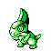
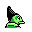

#155
Axew
Dragon
Its tusks break often, but grow back sharper It marks trees to claim territory
Base stats Total 280
HP46
Attack87
Defense60
Speed57
Special30
Details
- Species
- Tusk
- Height
- 2'00"
- Weight
- 39.7 lb
- Catch rate
- 75
- Base exp
- 64
- Growth
- Slow
Level-up moves
LevelMoveType
StartScratchNormal
StartLeerNormal
Lv 6LeerNormal
Lv 8BiteDark
Lv 10ScratchNormal
Lv 14SlamDragon
Lv 18Dragon RageDragon
Lv 20SlashNormal
Lv 25Swords DanceNormal
Lv 32Dragon ClawDragon
Lv 40OutrageDragon
Evolution
Where to find
TM / HM
TM02 Razor WindTM03 Swords DanceTM04 CrunchTM06 ToxicTM09 Take DownTM10 Double-EdgeTM18 CounterTM23 Dragon RageTM28 DigTM32 Double TeamTM39 SwiftTM44 RestTM50 SubstituteHM01 CutHM03 SurfHM04 Strength